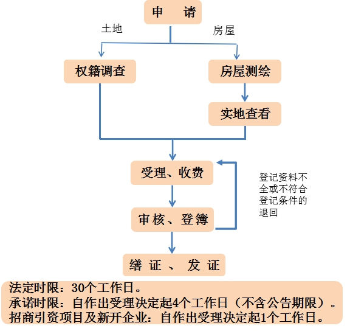

因同一权利人分割（合并）不动产申请变更登记
◆事项名称:因同一权利人分割（合并）不动产申请变更登记
设定依据：
1、《中华人民共和国物权法》(2007年3月16日主席令第六十二号)
2、《不动产登记暂行条例》（中华人民共和国国务院令 第656号）
3、《不动产登记暂行条例实施细则》
2、《不动产登记暂行条例》（中华人民共和国国务院令 第656号）
3、《不动产登记暂行条例实施细则》
提交材料：
1、不动产登记申请表；（原件）
2、身份证明材料：（原件、复印件一份，原件核对后退回）
境内自然人：提交居民身份证或军官证、士官证；身份证遗失的，应提交临时身份证。未成年人可以提交居民身份证或户口簿；
香港、澳门特别行政区自然人：提交香港、澳门特别行政区居民身份证、护照，或者来往内地通行证；
台湾地区自然人：提交台湾居民来往大陆通行证；
华侨：提交中华人民共和国护照和国外长期居留身份证件；
外籍自然人：中国政府主管机关签发的居留证件，或者其所在国护照；
境内法人或其他组织：营业执照，或者组织机构代码证，或者其他身份登记证明；
香港特别行政区、澳门特别行政区、台湾地区的法人或其他组织：提交其在境内设立分支机构或代表机构的批准文件和注册证明；
境外法人或其他组织：提交其在境内设立分支机构或代表机构的批准文件和注册证明。
法人提交法定代表人（非法人提交负责人）的身份证复印件、受委托人的身份证复印件（2份复印件均需加盖公章）以及法定代表人身份证明书、授权委托书（证明书、委托书均需原件）。
香港、澳门特别行政区自然人：提交香港、澳门特别行政区居民身份证、护照，或者来往内地通行证；
台湾地区自然人：提交台湾居民来往大陆通行证；
华侨：提交中华人民共和国护照和国外长期居留身份证件；
外籍自然人：中国政府主管机关签发的居留证件，或者其所在国护照；
境内法人或其他组织：营业执照，或者组织机构代码证，或者其他身份登记证明；
香港特别行政区、澳门特别行政区、台湾地区的法人或其他组织：提交其在境内设立分支机构或代表机构的批准文件和注册证明；
境外法人或其他组织：提交其在境内设立分支机构或代表机构的批准文件和注册证明。
法人提交法定代表人（非法人提交负责人）的身份证复印件、受委托人的身份证复印件（2份复印件均需加盖公章）以及法定代表人身份证明书、授权委托书（证明书、委托书均需原件）。
3、变更证明材料（原件）：
（1）原《国有土地使用证》、《房屋所有权证》或《不动产权证》；
（2）土地、规划部门同意分割（合并）的材料；
（3）不动产是净地的，出具由登记机构或者不动产权籍管理部门审核通过的不动产权籍调查成果，包括：不动产权籍调查表、不动产测绘报告、界址点坐标、宗地图；
不动产是房屋的，出具由登记机构或者不动产权籍管理部门审核通过的“测绘报告”。
（4）按规定要求消防验收的，符合消防验收的材料；
（1）原《国有土地使用证》、《房屋所有权证》或《不动产权证》；
（2）土地、规划部门同意分割（合并）的材料；
（3）不动产是净地的，出具由登记机构或者不动产权籍管理部门审核通过的不动产权籍调查成果，包括：不动产权籍调查表、不动产测绘报告、界址点坐标、宗地图；
不动产是房屋的，出具由登记机构或者不动产权籍管理部门审核通过的“测绘报告”。
（4）按规定要求消防验收的，符合消防验收的材料；
备注：
申请共有的，需全体共有人共同申请；
委托办理的，代理人应当提供被代理人签字或者盖章的授权委托书（原件）、被代理人和代理人身份证明（复印件）。
◆办理程序：申请受理 →审核 →记载于登记簿 →缮证发证
◆办理时限：自做出受理决定之日起4个工作日。（不含公告期限）
企业办理：自作出受理决定起1个工作日。
◆收费标准:依据国家发展和改革委员会、财政部文件发改价格规﹝2016﹞2559号登记费：住宅：40元/件；非住宅275元/件；小微企业免收登记费。
◆办理单位：银川市不动产登记事务中心
◆办理地点：银川市民大厅B3厅
◆咨询电话：5555412、5555413
◆查询网址： http://zrzyj.yinchuan.gov.cn
http://smdt.yinchuan.gov.cn
http://smdt.yinchuan.gov.cn
◆办理流程：
